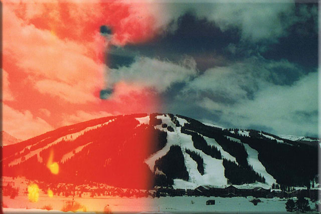
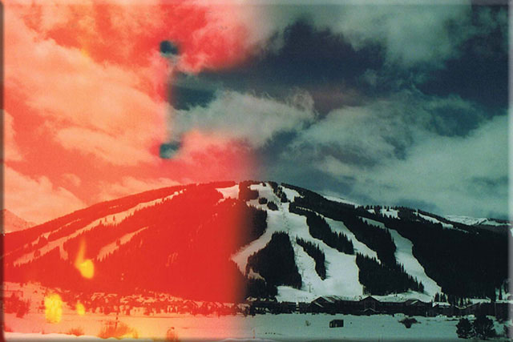
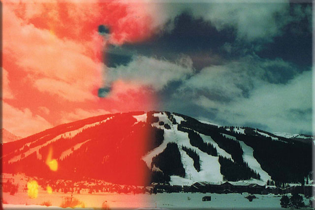
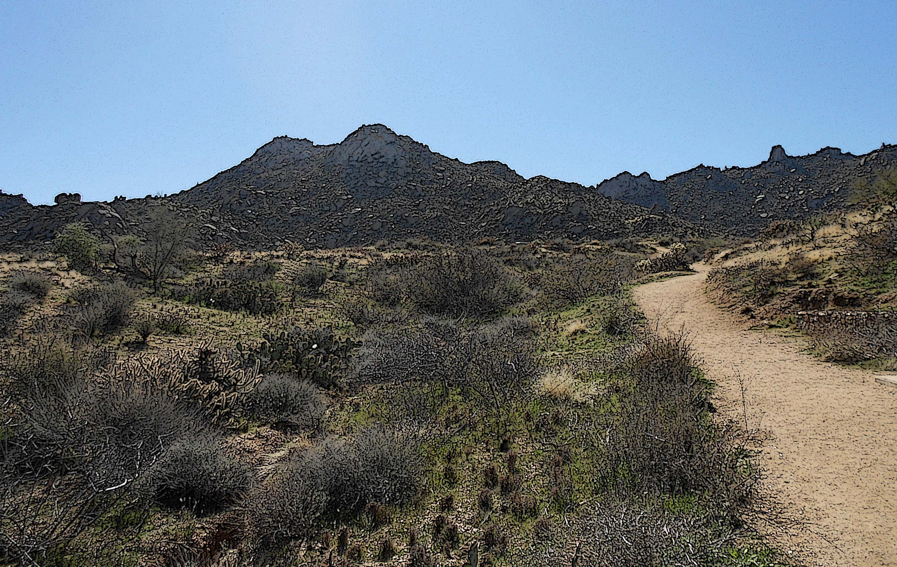
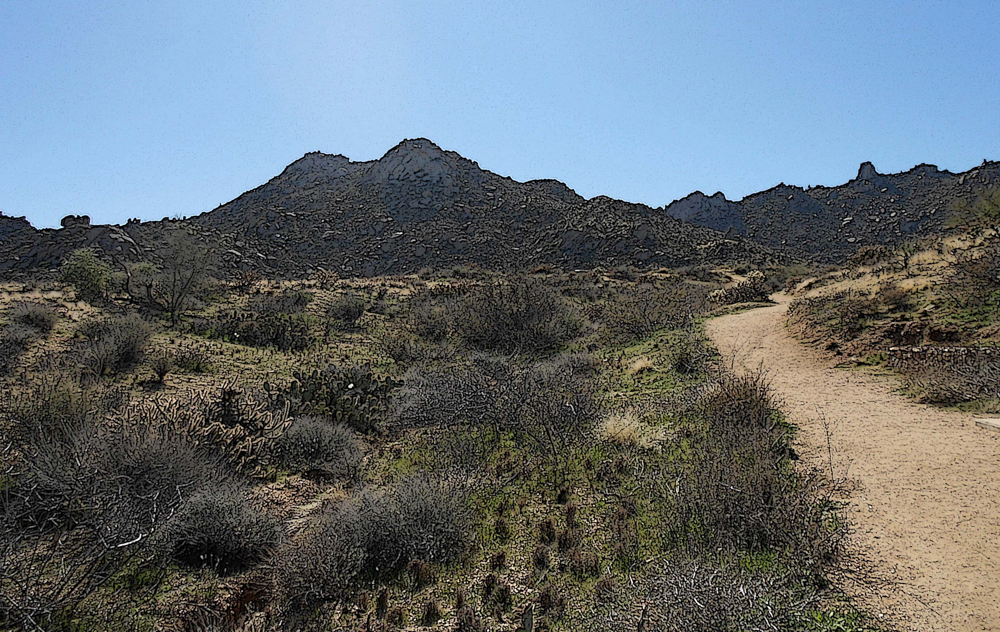

This collection of digital images was taken in various locations. The top three images were taken in Arizona. The middle row, from left to right, the images were taken in Colorado, Arizona, Michigan, and Arizona. My goal was to capture a unique perspective of the landscape with a digital camera.

 
